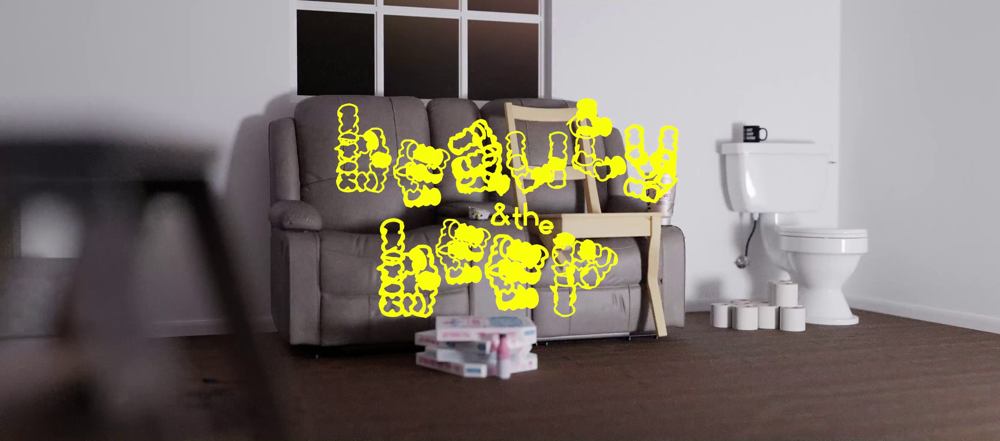
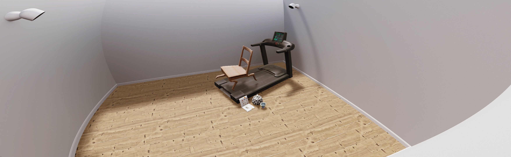
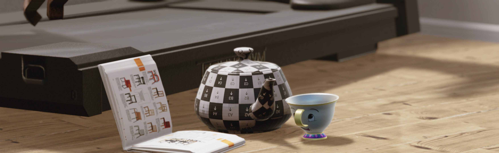
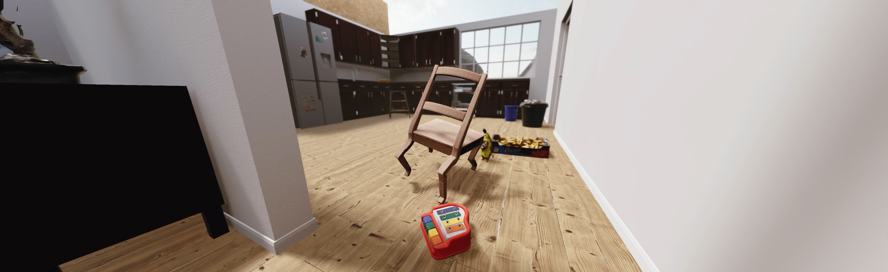
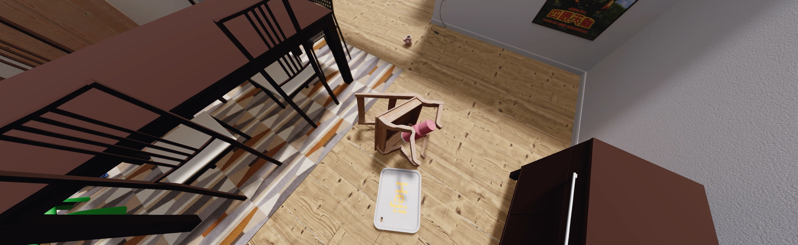
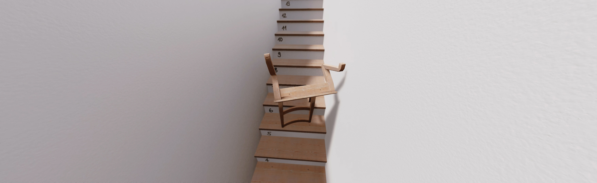
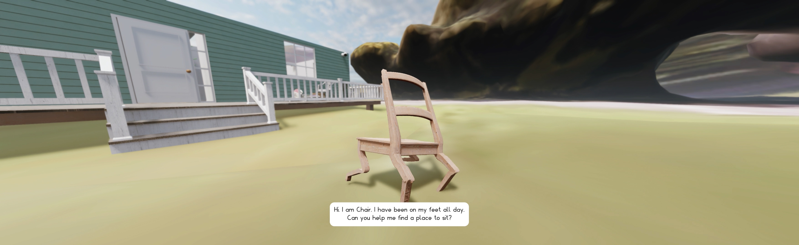
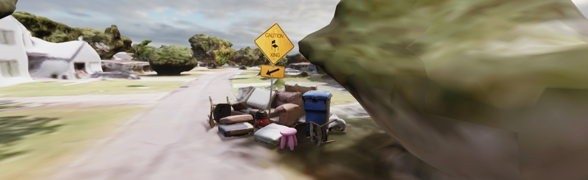

✳ Reinforcment Learning
✳ AI
✳ Unity
✳ Simulation
Exploring the consequences of cohabiting with computer vision, Simone Niquille’s ( ᐛ )و Beauty and The Beep follows Bertil, a chair that is trying to find a place to sit. Inspired by the enchanted household objects from the fairy tale Beauty and The Beast, the film is set in a suburban home instead of a castle, and the beast has been replaced by the continuous notification sounds of smart devices. In the film, Bertil navigates through a virtual house — a recreation of the model home built by the robotics company Boston Dynamics in 2016 to showcase their robot dog SpotMini.
Wondering who would buy an automated mechanical pet to assist and live in their home, the film explores Boston Dynamics' datafied definition of a home or what it takes for such a personal and intimate space to be standardised for computer vision to function. Bertil — a synthetic chair inspired by IKEA’s first 3D rendered image for their print catalogue, which marked their shift to rendered imagery — wanders through this seemingly simple virtual home, interacting with its objects, in search of some answers. Navigating the home for Bertil is no easy task, as they encounter the daily life noise that is littered throughout the home. A banana trips them, they cannot sit, they get stuck on a treadmill and why is there a toy pony on the floor? Revealing how the impossibility of gathering training data in the home has led to the widespread use of synthetic data, Bertil reminds us that the home is private and not for capture.

For this work, I collaborated with Simone C Niquille as a Creative Technologist. In the process of creating Beauty and The Beep, the chair was trained using reinforcement learning alogrthims in the Unity game engine. The training process took inspiration from Boston Dynamic's approach in the training of their SpotMini, as well as tradiontional DeepMimic environments for Reinforcement Learning research. We chose to use Unity for this project, as it allowed us to work with the ML-Agents Package - an experimental Reinforcement Learning framework, which wraps complex reinforcement learning algorithms/methods into components which are more acessible for developers. Even though this package has been forgotten by Unity, for the most part, working with a user-friendly game engine was key in creating simuated environments for the 🪑 to explore.

↯(2024)EXPOSED,Torino Foto Festival. Turin, Italy





< Training Process >
↯Scenography & Camera, Simone C Niquille
↯Creative Technologist, Cailean Finn
↯Music, New Furniture Music (after Erik Satie) and Pipe Dream (rewired), Jeff Witscher
↯Field Recordings, Klankbeeld
↯Voice, Oliver Lucas & Alexa, Amazon Echo